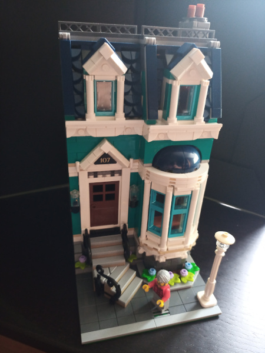
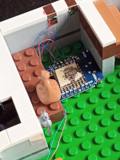
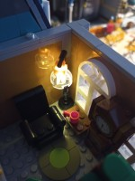
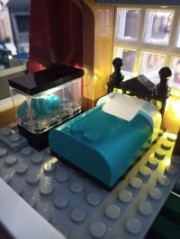
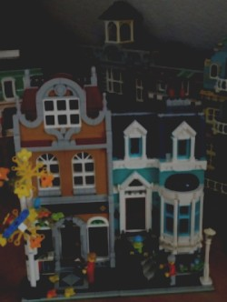
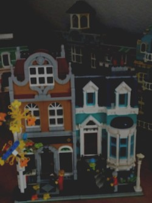
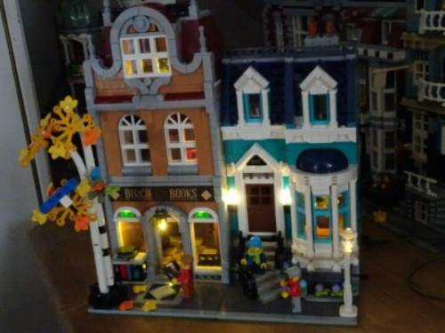
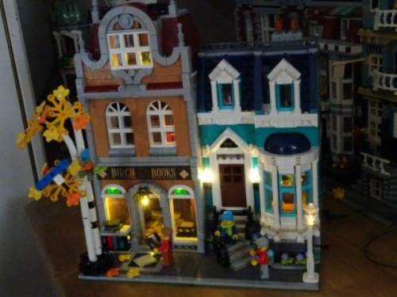

Beleuchtung im Buchladen, rechtes Haus.
Straßenlaterne
Zwei Außenlaternen neben der Haustür
Innen:
Kaminfeuer
Fensternische
Nachttischlampe im Schlafzimmer
Front mit Außenbeleuchtung linkes Haus
Innenbeleuchtung links
Wohnzimmer mit Lesesessel und Stehlampe
Schlafzimmer mit beleuchteter Vitrine
Hier kann man sehr gut sehen, wie gut sich die SMD-LEDs mit den vorab angelöteten Kupferlackdrähten für das Bauen eignen.
Bei fast allen Lampen konnte man die Drähte in vorhandene Ritzen klemmen. Lego Plättchen oder Bausteine drüber - fast unsichtbar.
Manchmal bleiben die dünnen Drähte vor den Wänden liegen, da ich das Anbohren der Steine meist vermieden habe.
Straßenlaterne
Zwei Außenlaternen neben der Haustür
Innen:
Kaminfeuer
Fensternische
Nachttischlampe im Schlafzimmer
Front mit Außenbeleuchtung linkes Haus
Innenbeleuchtung links
Wohnzimmer mit Lesesessel und Stehlampe
Schlafzimmer mit beleuchteter Vitrine
Hier kann man sehr gut sehen, wie gut sich die SMD-LEDs mit den vorab angelöteten Kupferlackdrähten für das Bauen eignen.
Bei fast allen Lampen konnte man die Drähte in vorhandene Ritzen klemmen. Lego Plättchen oder Bausteine drüber - fast unsichtbar.
Manchmal bleiben die dünnen Drähte vor den Wänden liegen, da ich das Anbohren der Steine meist vermieden habe.
Buchladen
Achterbahn
Karussell

Untere Verbindungen mit der passenden nächsten Etage.
Kupferfolie (Rollenware, 5,7mm) löst das Problem des Übergangs zwischen den einzelnen Etagen des Lego Bauwerks. Unten zwei Streifen Folie anbringen, Drähte anlöten und weiter verbinden. Gegenseite so anpassen, dass die Folien gut übereinander sitzen. Hier alle ankommenden Drähte anlöten. Polarität beachten!
Falls man mehr als einen Stromkreis haben möchte, kann man mehr als zwei Kupferfolien verwenden. An den (-)-Pol (GND) kann man die Kathoden aller LEDs anschließen.
Falls man mehr als einen Stromkreis haben möchte, kann man mehr als zwei Kupferfolien verwenden. An den (-)-Pol (GND) kann man die Kathoden aller LEDs anschließen.

Die Verbindungen über die Kupferfolie können über mehrere Etagen laufen. Ganz unten im Keller verbinden wir dann mit dem Microcontroller.
Hier habe ich die Straßenlaterne an D1 angeschlossen, die restlichen LEDs an D2.
Die Verbindungen über die Kupferfolie können über mehrere Etagen laufen. Ganz unten im Keller verbinden wir dann mit dem Microcontroller.
Hier habe ich die Straßenlaterne an D1 angeschlossen, die restlichen LEDs an D2.
Gemütlich im Schlafzimmer
Bei der Lampe waren zwei kleine Bohrlöcher erforderlich. Aber jetzt sieht man auch wirklich gar nichts mehr von der Verdrahtung.

Unten: die Tischbeleuchtung und das Kaminfeuer
Bei der Lampe waren zwei kleine Bohrlöcher erforderlich. Aber jetzt sieht man auch wirklich gar nichts mehr von der Verdrahtung.
Unten: die Tischbeleuchtung und das Kaminfeuer
Buchladen links
Wohnzimmer mit Lesesessel und Stehlampe
|  |  |
Schlafzimmer mit beleuchteter Vitrine
Buchladen rechtes Haus mit Straßenlaterne

Buchladen komplett, unbeleuchtet


Was ist denn das hier im Buchladen?
Lasse gewinnt den Vorlesewettbewerb!
Am Freitag, dem 21.2.2025 fand die Solinger Regionalrunde des Vorlesewettbewerbs der 6. Klassen statt. Insgesamt trafen sich dort zehn Schulsiegerinnen und Schulsieger und lasen um die Teilnahme am Landeswettbewerb. Die fünfköpfige Jury und zahlreiche Zuschauer ließen sich mit großem Vergnügen in fantasievolle und spannende Geschichten entführen. Nach der Präsentation eines selbstgewählten Textes mussten die Leseexperten in der zweiten Runde dann einen ihnen unbekannten Text vortragen. Beide Runden meisterte Lasse Norbisrath souverän und freute sich am Ende über den verdienten Sieg. Und natürlich fiebert er jetzt schon dem Landeswettbewerb entgegen.
Buchladen komplett, beleuchtet

